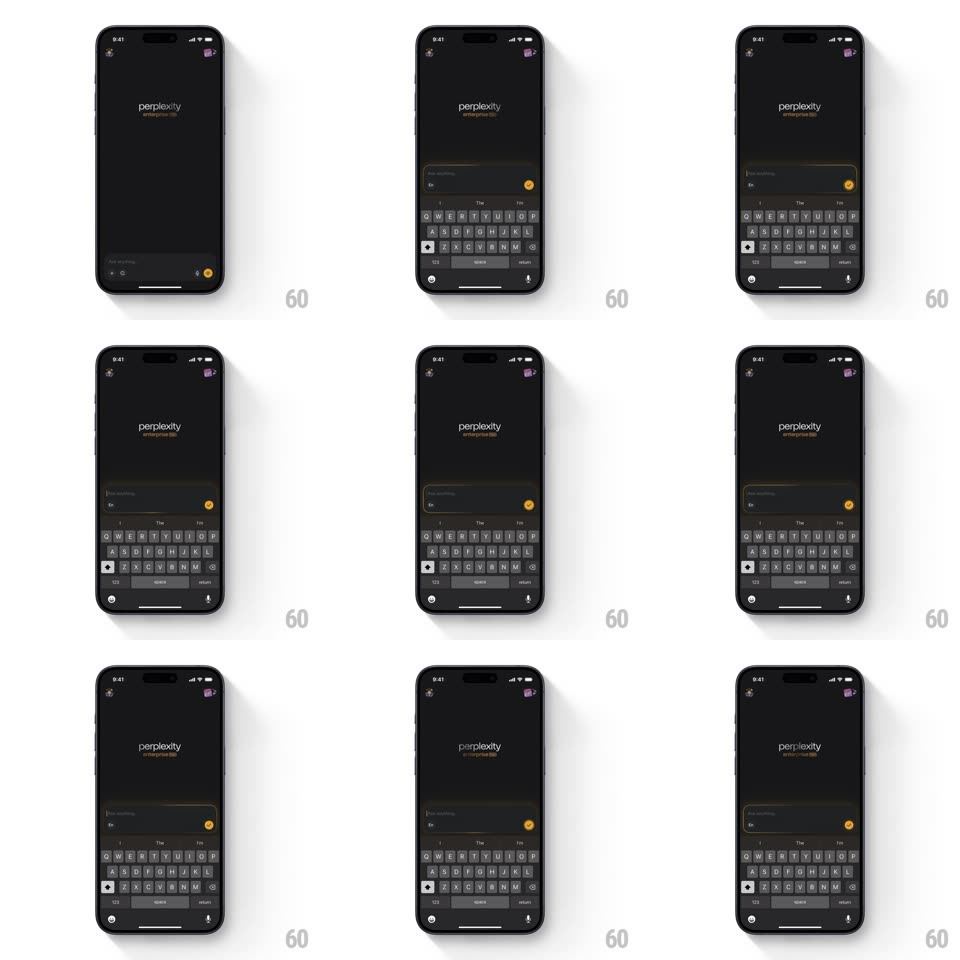

Media
Frame-by-frame

Rebuild this animation 1:1: Perplexity Enterprise Max's input focus - tapping the chat input draws a golden gradient stroke around its rounded border as the keyboard rises, settling into a steady gold glow while active.

Rebuild this animation 1:1: Perplexity Enterprise Max's input focus - tapping the chat input draws a golden gradient stroke around its rounded border as the keyboard rises, settling into a steady gold glow while active. ## Integration Integration: stack-agnostic spec - springs given as stiffness/damping, timed motions as duration + curve; map every value to your framework and animation library of choice. ## Scene Dark screen: "perplexity enterprise max" wordmark (gold "enterprise max") center-top, a bottom input bar with a gold send button. Focus state: the keyboard is up and the input's border carries a warm golden gradient stroke. ## Motion spec Pattern: stroke-draw focus, ~600ms. - Tap: the keyboard rises (system) while a gold stroke starts at the input's bottom-center and draws around the perimeter in both directions (500ms, ease-out), amber -> pale gold gradient. - Settle: the drawn stroke holds with a soft outer glow (blur 6px, 40% opacity) and a slow brightness pulse (3s) while the field stays focused. - Blur: dismissing the keyboard retracts the stroke back to its start point (300ms) leaving the default hairline border. - Send: the gold button pulses once (scale 1 -> 1.1 -> 1, 250ms) on send. ## Calibration - The stroke draws from one point and meets itself - a full-perimeter fade-in is wrong. - Gold appears only on the input and send button; the rest of the UI stays neutral. ## Reduced motion The border fades to gold (250ms) without the draw. ## Don't miss - The gradient sits in the stroke itself - it is not a static gold border. - The glow is subtle: visible on the dark background, never bleeding into the field.